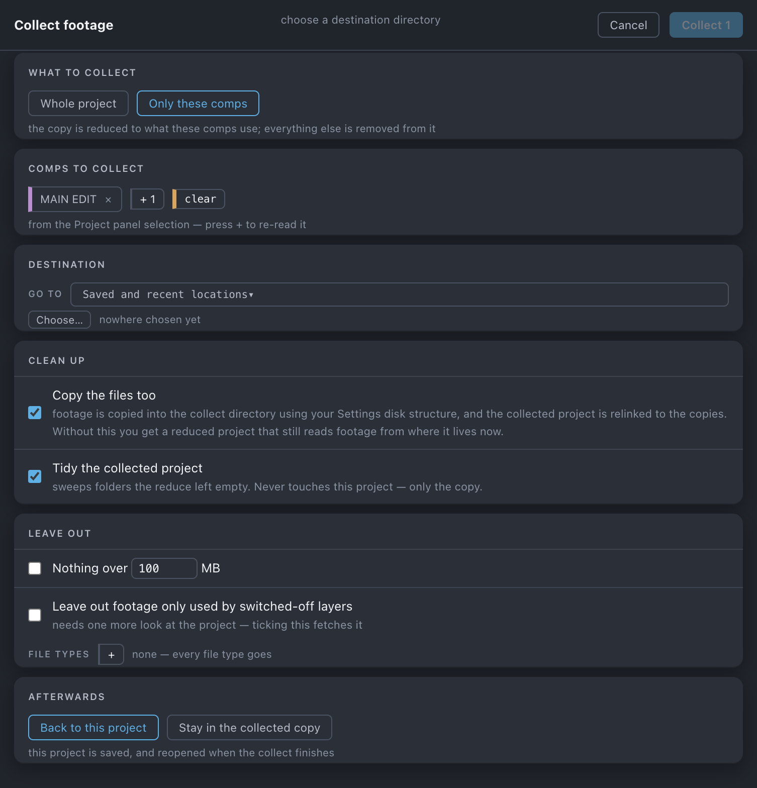

Collect
Writes a copy of the project and its footage — proxies included — into one folder, either whole or reduced to the comps you choose.
Use it when
- You are handing the job to a freelancer, a client or an archive and it has to be one self-contained folder.
- You want to send the two comps that matter without the forty that do not, and without touching the project you work in.
- The job is 53 GB and the version that has to travel is not.
What it does
Saves your open project, then writes a copy of it into a new folder — whole, or reduced to the comps you name — copies the footage those comps use into the same folder, and relinks the copy to the copies. Your own project is untouched beyond that save. Proxies are collected. The folder is named from the project, <project>_collected_<MMDDYY><letter>/, and the .aep inside takes the same name.
What it does not do: it does not change your project (Reduce reduces the one you are in), it removes nothing from disk, and it does not write a font or effects report.
Do it
- Press Collect. The first press reads the project's expressions if it has not already — the tile says reading… while it does, because a comp reached only by
comp("Name")has to be found before the reduce can be trusted. - Choose What to collect — Whole project or Only these comps.
- In comps mode, check the basket. It is seeded from your Project panel selection, or from your declared masters when nothing is selected, and the row says which.
+adds what is selected now,×removes one, clear empties it. - Choose a Destination, then set Clean up, Leave out and Afterwards.
- Press Collect project, or Collect n. The line under the button reads saves this project first, then collects a copy — a statement of fact, not a hint.
Scope. The basket is a snapshot, not a live read: once comps are in it, a stray click in the Project panel cannot change what is about to be collected. Whole project mode has no basket and keeps everything, unused items included.

What you'll see
| Option | What it means |
|---|---|
| What to collect | Whole project — everything stays — nothing is removed from the copy, unused items included. Only these comps — the copy is reduced to what these comps use; everything else is removed from it. |
| Comps to collect | Comps mode only. Chips with ×, a + carrying the count of selected comps, and clear. |
| Destination | Go to for saved and recent locations, Choose… for anywhere else, and a preview of the folder it will create. |
| Copy the files too | footage is copied into the collect directory using your Settings disk structure, and the collected project is relinked to the copies. Without this you get a reduced project that still reads footage from where it lives now. |
| Tidy the collected project | sweeps folders the reduce left empty. Never touches this project — only the copy. |
| Nothing over n MB | Leaves the big files out. They stay pointing at the originals. |
| Leave out footage only used by switched-off layers | With a measured line: n of m layers are switched off; k are track mattes and j are read by an effect, so they still render and are kept. |
| File types | Chips of extensions to leave out; + offers what the project contains, each with its count. A chip here is a type being left out; empty reads none — every file type goes. |
| Afterwards | Back to this project — this project is saved, and reopened when the collect finishes. Stay in the collected copy — when it finishes, the collected project is the one open in After Effects. |
What you will get measures it first — n items · m files (k proxies) · size — and flags what will not travel: files not on disk, files a filter left out, and same-named files that keep a directory level so they do not overwrite each other. A dim button says why, as its tooltip and in the sheet: choose a destination directory, no comps held — select comps in the Project panel, then press +, expressions not read yet — press the Collect tile again to fetch them.
Undo
Not undoable — it writes to disk. But it changes nothing in your original project beyond saving it, and the copy is a new folder you can delete. On success the sheet closes and the strip reads Collected — n file(s) copied · path copied, with the destination already on the clipboard. On failure the sheet stays open with the reason, Reveal in Finder and Copy path.
Watch out
Things you might not think to do
- Send a small version of a large job. Nothing over n MB plus a file-type chip or two for the camera masters. What is left out keeps pointing at the originals, so the copy still opens; it just cannot see those files.
- Produce a reduced project that still reads footage where it lives. Untick Copy the files too — the right shape for an internal hand-off on the same server.
- Just spit out a collect. Whole project, a destination, press. No comp-choosing step at all.
- Collect twice in a day, or collect a collect. The folder letter advances
a,b,cfrom what is already on disk, and a previous_collected_…suffix is stripped before the new one goes on. Afterzit refuses loudly rather than overwritinga.
Pairs with
Reduce does the same reduce to the project you are in — reach for it when you want your own project smaller, and Collect when you want somebody else's copy smaller. Declare Masters first and the basket seeds itself. Gather is the alternative when the job should become self-contained in place.